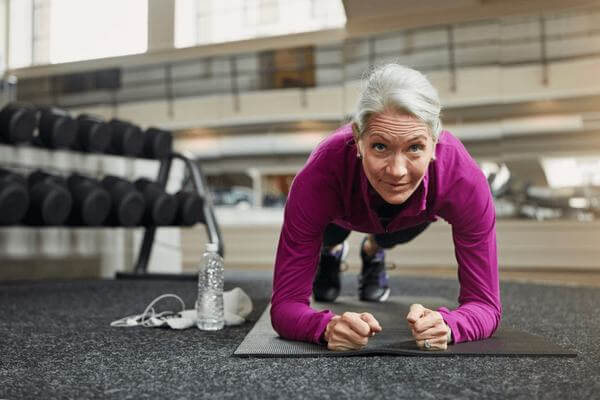

ПРОМЯНА НА ЖИВОТА: Студентка по медицина в България е измислила уникален продукт, който ще ви помогне да свалите 25 килограма за 28 дни


Това е Красимира Огнянова, най-добрата студентка по медицина.
Без диета или упражнения.
И в процеса на работа върху докторската си дисертация тя се натъкна на нов метод срещу задържането на мазнини, за който никой не беше чувал преди.
За да се увери, че това не е случайно, тя помоли леля си Благомира Драгнева да опита:

Благомира Драгнева отслабна с 15 кг за месец.
нов метод срещу задържане на мазнини:

Илияна Иванова свали 34 кг за 2 месеца.
И един от участниците в нейното дисертационно изследване, Костадин Обрежков, получи изключителни резултати:
Той самият свали над 59 кг за по-малко от 3 месеца с помощта на Красимира Огнянова.
Дори професорите и преподавателите на госпожица Огнянова бяха шокирани от новия й метод.
На сцената пред научната общност тя заяви:
"Ако се борите с теглото... МОЖЕТЕ И ВИЕ да свалите 25 кг за 28 дни. Без диета и упражнения. Благодарение на този уникален продукт"
Нейните професори и техните колеги бяха шокирани. Всичко им се стори фалшиво
Но Красимира Огнянова доказа, че грешат.
Нека поговорим по-подробно за продукта който е измислила.
Как Красимира Огнянова направи това откритие?
Тя откри това революционно решение за отслабване за около 2 години.
Поради трудното и образование тя нямаше време да следва здравословния начин на живот и затова натрупа повече от 25 кг.през първата година на обучение.

Заради наднорменото тегло всичко беше тегаво и в личния живот...
Веднъж тя търсеше учебни материали в отдела за редки книги в Университетската библиотека.
Тя се натъкна на стара книга, която описва едно интересно, но вече забравено изследване "Методът за блокиране на мазнини. Експеримент 35/10".
Поглеждайки към себе си в огледалото, Красимира знаеше, че трябва да направи нещо по въпроса.
Нов метод срещу задържане на мазнините
Тя трябваше да приложи този нов метод срещу задържане на мазнините.
Първоначално тя се опита да създаде необходимия продукт от импровизирани компоненти чрез смесване на соли, основи (бележки: сода) и киселини като оцет и лимонена киселина. Но за съжаление у дома резултатът не беше както се очакваше и без специално оборудване беше трудно и много скъпо.
Обаче се движеше в правилната посока и този метод определено трябваше да се развие.
За щастие тя получи достъп до лабораторията по хранене на Медицинския в София, който и позволи експериментиране с този метод.
Методът срещу задържане на мазнините беше прост, лабораторията имаше всички необходими съставки.
След месеци опити и грешки...
...Красимира Огнянова успя да събере перфектната комбинация от съставки.
Всичко това беше необходимо, за да се тества този метод срещу задържане на мазнини.
Красимира Огнянова изпробва изследванията си върху себе си. И за 7 дни тя успя да свали 8 кг.
А после, 14 дни по-късно, тя свали още 7 кг.
След 21 дни тя свали още 5 кг.
И към края, след 28 дни Красимира беше свалила още 4 кг.
Само за 28 дни беше отслабнала с 25 кг!
Каква е същността на този метод срещу задържане на мазнини?
В нашето тяло има специални хормони-лептини, те регулират усещането за глад и отлагат мастните клетки.
За съжаление, повечето съвременни хора имат хормонални смущения, които не работят правилно. Което води не само до повишен апетит, но и до забавен метаболизъм. И като резултат към неоправдано наддаване на тегло.
Моят метод връща работата на лептините към нормалното, като задейства сигнали, които ускоряват метаболизма.
който следваше нов метод срещу задържане на мазнини
Но научната общност от онова време се уплаши, те не бяха готови за такива резултати.
Страхувайки се от отговорност, експериментът беше покрит и скоро всички забравиха за него.
Но сега, вие също можете да блокирате натрупването на мазнини и да отслабнете много за един месец.
Ами ако имате бавен метаболизъм или се борите с наддаване на тегло през целия си живот?
Не се притеснявайте.
Дори ако имате бавен метаболизъм. Дори ако цял живот се опитвате да отслабнете. Или дори ако просто искате да загубите много мазнини преди предстоящата голяма сватба или събитие.
Новият метод срещу задържане на мазнините ще се справи с това с лекота.
Вземете например 62-годишен Николай Бачев.
През целия си живот той се бори с безпричинно наддаване на тегло. Но след като опита нашия метод. Той може да яде почти всичко, което иска.
И все пак останете във форма!
Вижте как Николай Бачев Николов свали от 102 кг на 82 кг за един месец:

Има още една жена на име Елена Божурова, на 58 години, която искаше да отслабне за сватбата на дъщеря си.
Само за 5 седмици тя успя да свали 28 кг. И изглеждаше страхотно на сватбените снимки на дъщеря си.

Има и един 49-годишният Владимир Владимиров, който започна да наддава тегло след 30-годишна възраст.
Няма да повярвате! Но след като следваше нашия метод срещу задържане на мазнините, той успя да облече старите дрехи, които носеше преди 20 години..
Представете си, че можете да намерите костюм или рокля, които не сте носили от години. Или какво е да изглеждаш тънък и да изглеждаш страхотно на всичките нови снимки.
Нов метод срещу задържане на мазнини може да сбъдне всичките ви мечти за отслабване.
Проблемите с теглото не са ваша вина
Красимира Огнянова винаги се е чудила защо нейният професор настоява за потенциално опасни и скъпи препарати.
Когато се задълбочи в изследванията си, тя откри шокиращи неща.
Аптечната мафия и диетолозите по целия свят крият как могат да съществуват най-добрите продукти, защото е по-изгодно да се продава временно облекчение, а не пълно възстановяване!

Но сега...
Това е последното диетично решение, от което някога ще се нуждаете
Никога повече няма да имате нужда от други добавки за отслабване, диета или план за упражнения.
Защо?
Когато Красимира научи за този нов метод срещу задържане на мазнините, тя трябваше да разработи някакъв начин хората да го въведат в ежедневието си.
Изследванията й я накараха да открие един таен продукт.
Минералът прави нов метод за блокиране на мазнините достъпен за широката общественост.
И може да ви помогне да свалите 25 кг за 28 дни!
% от субектите, отслабнали
- - Хора, които спазват традиционна диета
- - Тайните тестери на Новия метод срещу задържане на мазнините
| 3% |
| 97% |
Няма да получите само краткосрочни резултати.
И ако се чудите...
...Не виждате този продукт в магазините, тъй като Красимира Огнянова току-що завърши разработването на тази формула. Ето защо Вашият специалист вероятно никога преди не е споменавал този продукт..
Отсега нататък ще се виждате слаби всеки ден.
Красимира Огнянова и нейният екип току-що създадоха първите партиди от този продукт.
Но по-добре побързайте, защото този нов запас свършва БЪРЗО:

Представете си, ако можете да получите този продукт, преди да изтече текущата партида?
Бихте могли да влезете в онези дънки, които не сте носили от години.
Можете отново да ядете каквото искате...
...И да не се притеснявате за теглото си.
И ще станеш по-щастлив, по-тънък!
Но защо Красимира Огнянова иска да произвежда този продукт?
Тя иска другите да изпитат същия успех
Тя просто иска да помогне на хората да отслабнат като нея. Това е целта на живота й като бъдещ професионалист, специалист по хранене.
Трябваше да измисли нещо, което да работи до края на живота.
Скоро ще видите и резултатите от отслабването. Това никога не сте виждали досега.
Няма нужда да ограничавате храната.
И никакви упражнения.
Само си представете, че виждате себе си по-тънък в огледалото.
Какъв е този продукт?

Нарича се капки
И това дава на тялото ви тласък, от който се нуждае, за да изпрати сигнали за нов начин за блокиране на мазнините в мозъка ви.
Това напомня на тялото ви, че сте сити и доволни от това, което сте яли.
Предотвратява натрупването на мазнини.
не само блокира натрубването на мазнините, но и поставя тялото ви в състояние на кетоза.
Това превръща тялото ви в пещ за изгаряне на мазнини.
...И кое е най-доброто?
За да постигнете нереалистични резултати, не е необходимо да спазвате диета или да спортувате.
Вижте този тест между двама пациенти.
Красимира Огнянова накара една жена да спазва традиционна кето диета в продължение на един месец, докато друга жена използва .
Жена, която се занимаваше с традиционна диета, отслабна с около 6 кг:
Обаче жената, която е използвала , обаче НЕ е спазвала диета и НЕ е тренирала...
...Тя свали 26 кг за месец:
Един от малкото й професори който призна постиженията на Красимира каза:
"Тази , открита от Красимира Огнянова, е революционна. Лесна за използване. И имате най-бързите резултати за отслабване без диета или сложен план за упражнения. Няма и странични ефекти. Силно препоръчително."
Кажете чао на изтощителните упражнения и трудните диети...
...Приветствайте най-нежното и лесно отслабване.
Но може би се чудите как да го направите в ежедневието си.
Това е лесно!
Понеже…
Това е най-лесният начин за отслабване
Защо това е най-лесният начин да отслабнете?
Просто приемате продуктът два пъти на ден. И вие също можете да свалите 25 кг за 28 дни!
Няма нужда от диета или упражнения!
Без броене на калории и ограничения в храненето.
Никакви изтощителни тренировки.
Не вярвате ли в това?
Вижте как Десислава Иванова загуби 25 КГ за 27 дни:

Тя каза: "Бях шокирана. Красимира Огнянова и нейният екип ми казаха изобщо да не правя диета и да не спортувам. Просто да приемам този продукт два пъти на ден. Никога не е било по-лесно да свалите 25 кг за по-малко от месец."
И ето резултатите на Борис Стоянов за 29 дни:
Той каза: "Мразя кардиото или всяко друго упражнение.. въпреки това, Г-ж Огнянова посъветва просто да следвам прости инструкции за приемане на този минерал. 29 дни по-късно бях с 30 кг по-лек. Всеки уикенд ядях пица. Благодаря, Красимира!"
Представете си, че можете да се насладите на любимата си храна. И да не спортувайте...
...За да постигнете тялото на мечтите си.
Носете този бански костюм или плажен бански с пълна увереност.
Защото сте в най-добрата си форма в целия ви живот.
Така че да отслабнете бързо е наистина супер
Но има ли риск отново да наддадете тегло?
Не, няма риск да напълнеете отново.
Борислава Костаджиева е спазвала диета през целия си живот. И тя използваше всякакви диети и тренировъчни лудории.
Нищо не можеше да задържи теглото й завинаги.
Въпреки това, когато тя участва в тестовете на Красимира Огнянова, Борислава Костаджиева свали 23 кг за 26 дни:
И след 6 месеца.
Борислава Костаджиева все още можеше да поддържа стройното си, тонизирано тяло.
Албена Стойчева, още една от тествалите продукта на Красимира Огнянова, написа отговор 6 месеца след загубата на тегло:
"След като свалих 18 кг за 20 дни, не промених нищо в продължение на 6 месеца. И познайте какво? Все още изглеждам, тежа и се чувствам така както след курса!"
Ето снимка на напредъка на Албена Стойчева:
Вероятно питате...
Безопасен ли е продуктът ?
е много безопасен, тъй като е добре проучен природен продукт, който Красимира Огнянова е открила в своите изследвания.
Никакви странични ефекти.
72% от хората, които са използвали традиционни препарати за изгаряне на мазнини, са имали странични ефекти, докато 0% от потребителите на са имали странични ефекти.
И вижте какво казаха някои от тези пациенти:

"Бях скептично настроена към ... защото традиционните препарати за изгаряне на мазнини винаги са ме
разочаровали. Но организмът ми добре усвои това средство и успях да сваля повече от 25 кг за 1 месец."
- София Рашкова от София

" ми помогна да сваля 30 кг и нямах никакви странични ефекти."
- Георги Рашков от Варна
Така че, ако все още се съмнявате в , няма нужда да се притеснявате.
Само си представете колко тегло ще загубите без никакви усилия.
Така че големият въпрос е...
Как да получите ?
Е, днес е вашият щастлив ден!
Красимира Огнянова най-накрая получи одобрение от своя екип и инвеститори за пускането на този продукт за широката публика..

Всяка опаковка от съдържа необходимото количество компоненти за лесно похудение.
Екипът на Красимира Огнянова е инвестирал милиони левове в изследвания на .
Обикновено една опаковка за отслабване струва около .
Но... това не е това, което днес ще платите за една опаковка
След секунда ще стигнем до реалната цена, но първо...
Какво казват хората за ?

"Бях чувала за успешните тестове на Красимира Огнянова, но мислех, че е твърде хубаво за да е истина.
Добре... 23 дни по-късно свалих общо 30 кг! Дай Боже здраве на всички, които са опитали ."
- Диляна Иванова от София
"Опитайте! Отслабнах с 15 КГ за месец."
- Деяна Петрова от Пазарджик
"През целия си живот бях с наднормено тегло. Нито диетата, нито упражненията никога не са работили. За 25
дни свалих над 25 КГ за първи път в живота си. Просто го приемах два пъти на ден. Това е лесно. Благодаря,
Красимира!"
- Петър Верданов от Русе
"Бях шокиран, когато приятелката ми посъветва ... и дори ме посъветва да не тренирам и да не спазвам
определен диетичен план. За 30 дни успях да сваля около 30 кг. Беше невероятно."
- Димитринка Костова от София
"Загубих 28 кг през първия месец! Като си помисля, дори спрях да тренирам, когато започнах да използвам
. Силно препоръчвам."
- Елена Костова от Бургас
Красимира Огнянова свърши цялата тази упорита работа, защото не й все тая
Тя разбира какво означава да имаш проблеми с теглото.
И сега, когато тя има перфектната формула за отслабване, иска колкото се може повече хора да разберат за .
Добре, инвеститорите Красимира Огнянова наистина не искат тя да прави това, но тя просто иска да помогне на хората да отслабнат...
...Точно както тя загуби 25 КГ за 28 дни.
Вместо да плати за опаковка , Красимира Огнянова сключи ограничена сделка.
Сега се организира томбола, в която можете да участвате и да получите 50% отстъпка за .
Сега, ако все още се съмнявате...
Какво губите?
Имате 2 варианта.
Вариант №1... решавате, че не е за вас.
И да си останете в същата форма, в която сте сега. Оставайки със същото тегло. И само ще се мечтаете за стройна фигура.
Няма нищо лошо в това.
Или... вариант №2... можете да поемете контрола над живота си и да получите опаковка ...
...И да свалите 25 кг за 28 дни.
Изборът е ваш!
Ако сте готови да отслабнете днес, кликнете върху бутона по-долу и вземете опаковка с 50% отстъпка!
(Поръчайте си сега, преди да свършат)
Забележка: Красимира Огнянова и нейните пациенти са използвали , за да отслабнат значително.

Актуализация на запасите от продуктите: пробните опаковки от продукта все още са налични от:
Нашите продукти са опаковани в устойчиви материали, направени от рециклируемо стъкло, хартия и пластмаса.
Цветът на капачката от рециклирана пластмаса може да се различава от снимката.
Поли Генова
Това е чудо продукт!!! Аз също искам да купя. Не искам да отменям ваканцията си 10 пъти подред!
Димитринка Александрова
Какво чакате? Момичета, поръчайте и започнете да отслабвате с ! Тъй като предлагат безплатна проба, можете да я тествате, преди да купите, за да сте сигурни
Гери Пачерезка
Вече го купих. Вижте резултата ми. Не съм променила диетата си и не съм спортувала. снимка преди / снимка след
Пенка Пенева
Страхотен резултат!
Даниела Славова
Най-важните промени се случват във вас. Първо се променяте външно, а след това емоционално, чувствате се по-щастливи от всякога!
Анелия Търновска
Напълно съм съгласна! След като започнах да използвам този продукт, съпругът ми отново прояви интерес към мен, преживяваме втори меден месец с него, правим секс по-често, отколкото преди 20 години! Най-хубавото в този препарат е, че отслабването не изисква никакви усилия, то е толкова просто и удобно!
Георги Георгиев
Но с отслабнах много бързо и лесно. Първо поръчах продукта с отстъпка и от първия ден разбрах, че наистина работи. Тогава поръчах пълен курс, който също беше много достъпен.
Дилян Койчев
Потвърждавам! работи наистина добре дори в проблемните зони, мазнините напускат цялото тяло равномерно. От първите дни се вижда, че продуктът работи.
Милена Рачева
На 53 години съм, мислите ли, че това ще помогне на моята възраст?
Лиляна Иванова
Струва си да опитам. Както и да е, това е най-доброто от всички продукти, които съм опитвала досега.
Маринела Стоянова
Прекрасни капки! Хареса ми да пробвам да отслабна с отстъпка. Устройва ме. Споделям напредъка си.
Димитър Конев
Колко време ви отне?
Маринела Стоянова
Около месец
Драганка Плачкова
Много се радвам, че разбрах за ! Качеството на живота ми се подобри толкова драстично. Отново съм щастлива жена... благодаря!
Дафинка Колева
Те мислят, че съм само на 30 години, това е страхотно! Преди се срамувах от външния си вид, но сега не се срамувам да кажа, че съм на 43)))
Ангел Демирев
И двамата със съпругата ми изпихме курса и свалихме над 50 кг общо двамата, и забележете, без диети и фитнес. Този продукт е наистина готин и с него е много лесно да отслабнете.
Биляна Пастървова
Днес всеки може да има красиво и стройно тяло, а не само да гледаме някакви хора с добра генетика и много свободно време за ежедневни тренировки в залата.
Коста Колев
Отне ми само 3 седмици, за да си върна контрола върху килограмите. Най-бързата загуба на тегло.
Станка Панайотова
Толкова е просто, всичко, което трябва да направите, е просто да използвате продукта.
Радо Радев
Поръчайте продукта с отстъпка и веднага ще разберете за какво става въпрос, това е най-надеждният и безрисков начин!